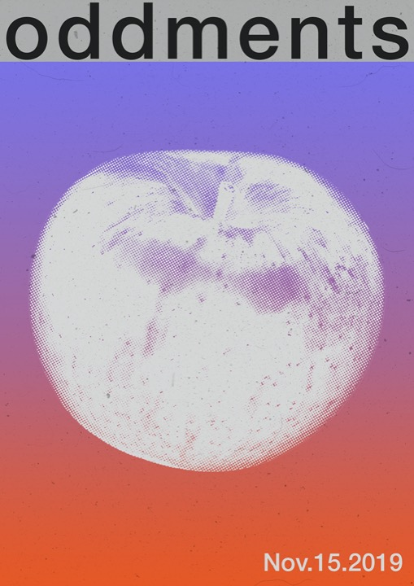
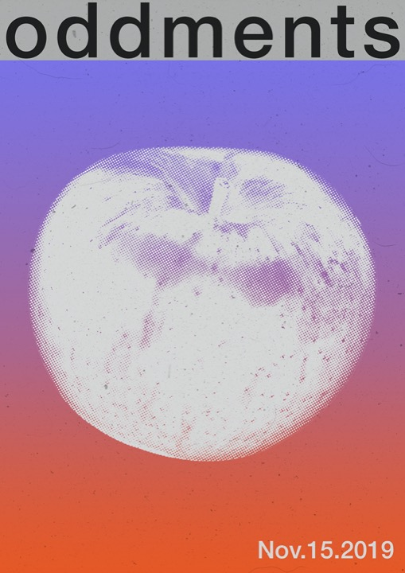

Info
Finn Arundel is a multidisciplinary designer based in Naarm/Melbourne, Australia. He has received his Bachelor of Communication Design from RMIT.
Assorted graphics


 


Synapse
Design for Synapse’s mix series. Designs feature audio-reactive generative adversarial network (GAN) videos trained on artist specific data-sets. The series explores the relationship between visual and audio experiences. Synapse logo designed by Maximilian Bufardeci.


Projections for Synapse + Neurocrank event at Grace Darling Hotel. In collaboration with Rubi Dinardo.
Nuada
Design for mock bionics company Nuada. Inspired by the ultra-utilitarian design of non-consumer products such caution labels and battery graphics. Work includes custom typographic logo based on modular shape system.


Aisemic
A computer-generated asemic typeface. The work seeks to highlight the issues present in the misunderstood and enigmatic AI systems that are increasingly making decisions that affect billions of lives. The typeface is presented in an online type sampler which utilising a Markov chain algorithm to generate paragraphs based on significant economic, political and philosophical writings. The typeface is unreadable to humans, but words can be revealed through interaction with the web-page. Plaese message for the font file.

Arrival
Arrival is a collaborative research-led project undertaken by myself and Fergus Arundel. The project aims to visualise historic and contemporary events surrounding Australia’s relationship with immigration through a web-based digital space.

Artificial Nature
A visual and sonic virtual installation utilising IPCC climate data. The piece juxtaposes the best and worst scenarios laid out by the IPCC in their report, hoping to highlight the power humans still possess in shaping their climate future. The piece in hosted online in a virtual environment.